Causal Inference
Introduction
What exactly is machine learning? What can we derive from data? How can we ensure that the conclusions we draw are correct? To address these questions, we need to move beyond simple correlation analysis and delve into causal analysis. For instance, we can collect data on whether individuals smoke and whether they develop lung cancer, then use a classification model to predict the incidence of lung cancer or calculate the correlation between smoking and lung cancer to persuade the public. However, why don't we predict smoking rates based on lung cancer? Clearly, this would be a meaningless research objective. But how do we know it's meaningless to the extent that it seems "obvious"? The premise for this conclusion is our common understanding that smoking may lead to lung cancer, while lung cancer is not a cause of smoking. Whether we're obtaining the probability of developing lung cancer under smoking conditions or proving a correlation between smoking and lung cancer, our conclusions rely on common sense reasoning. In a narrow sense, models that require human involvement in reasoning are not perfect algorithms, just as using an abacus is to using a calculator. In a broader sense, we cannot always confidently infer correct conclusions from correlations; they are not always as straightforward as the case of smoking and lung cancer, as illustrated by the examples below.
Simpson Paradox
A hospital has reported the treatment effects of a certain medication on patients, as shown in the table below.
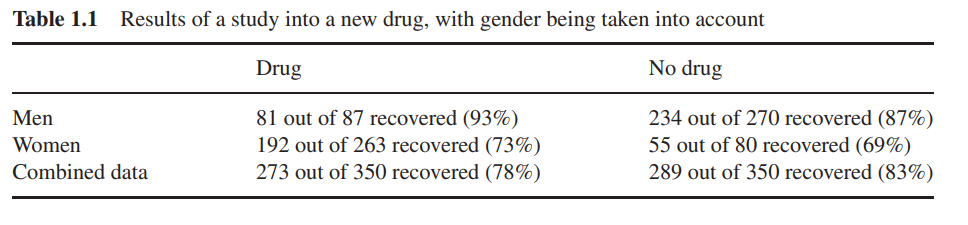
From the final results, it appears that the cure rate without the medication is 5% higher than with it. Does this imply that not using the medication is better? However, if we separate the data by gender, we find that among males, the cure rate with the medication is 6% higher than without it, and among females, it’s 4% higher. Does this indicate that using the medication is better? The reason for this discrepancy lies in the fact that the overall cure rate for females is significantly lower than for males, and the medication usage rate among females is notably higher. Consequently, in the medication group, females dominate, while in the non-medication group, males dominate. This results in the higher cure rate of the non-medication group being primarily due to males who did not use the medication. Symbolically, this can be described as: \[ \frac{a_1}{b_1}>\frac{a_2}{b_2},\frac{a_3}{b_3}>\frac{a_4}{b_4}\not\equiv \frac{a_1+a_3}{b_1+b_3}>\frac{a_2+a_4}{b_2+b_4} \] Consider that when faced with such relationships in a dataset, we can create a highly accurate predictive model for whether a patient is cured and select a feature subset that includes both medication use and gender. However, can these lead to the conclusion that the medication improves cure rates? No, this issue transcends correlation and delves into causality. We need more sophisticated algorithms to address such problems.
Correlation and Causation
Correlation reflects the superficial phenomenon of causation. Because there is a causal relationship between variables, they exhibit correlation. Conversely, does correlation between variables necessarily imply a causal relationship? This question is quite controversial. Here, I will provide some definitions to explain why I believe that correlated variables must have a causal relationship.
Stable Data: Data that consistently fits a certain distribution over a long period is referred to as stable data.
Correlation: If certain variables in stable data are not independent, they are said to be correlated.
Causation: If forcibly changing the value of variable A results in a change in the value of variable B, while forcibly changing the value of variable B does not lead to a change in variable A, then A and B are said to have causation, with A as the cause and B as the effect. In a Directed Acyclic Graph (DAG), variables are represented as nodes, and directed edges point from cause nodes to effect nodes.
Causal Relationship: Sufficient conditions for a causal relationship between variables A and B include the following:
- A and B have a causal relationship.
- A and B share a common cause, meaning A and B are descendants of the same cause node.
Based on the definitions above, having a causal relationship and having correlation are necessary and sufficient conditions. For example, the following data shows the investment in technology in America and the number of suicides.
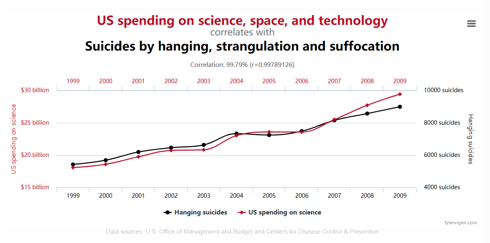
（More examples can be found in Spurious Correlations (tylervigen.com)）
The data above does not meet the definition of stable data due to the small sample size. However, if we compile daily data over a continuous span of ten years and still observe such a strong correlation, we would have to believe in a causal relationship between investment in technology and the number of suicides (for example, due to the initiation of Frankenstein research).
Another situation is mutual causation, which cannot be represented using a DAG. For instance, in an ecosystem, an increase in wolf population leads to a decrease in sheep population, which in turn reduces the wolf population, leading to an increase in sheep population, which then causes an increase in the wolf population. The relationship between wolf and sheep populations cannot be represented by a DAG. This article will not discuss such cases but will focus on relationships that can be represented using a DAG.
Foundation
Uppercase letters represent random variables, while lowercase letters represent the values of these random variables. In the formulas, \(P(X)\) denotes the probabilities for all values of \(X\), $P(X=x) or $\(P(x)\) denotes the prbability of \(X=x\). \(P(X=x|Y=y)=P(x|y)\) denotes the probability of \(X=x\) when \(Y=y\) holds. \(P(x_1,x_2,...x_n)\) denotes the probability of \(X_1=x_1\wedge X_2=x_2,...\wedge X_n=x_n\).
Conditional Independence
In the case where the value of the random variable \(C\) is determined (i.e., $ C = k $), if random variables $ A $ and $ B $ are independent, then $ A $ and $ B $ are conditionally independent given \(C = k\): \[ A \perp B | C = k \iff P(A | C = k) P(B | C = k) = P(AB | C = k) \] If the above relationship holds for any value of $ C $, then $ A $ and $ B $ are conditionally independent given $ C $, denoted as $ A B | C $. This is equivalent to: \[ P(B | C = k) = P(B | C = k, A) \\ P(A | C = k) = P(A | C = k, B) \] Conditional independence of $ A $ and $ B $ given $ C $ is neither sufficient nor necessary for independence of $ A $ and $ B $. For example, let $ A $ be the event that the first coin toss results in heads, $ B $ be the event that the second coin toss results in heads, and $ C $ be the event that both tosses are heads. In this case, $ A $ and $ B $ are independent, but $ P(A | C = 1) = P(B | C = 1) = P(AB | C = 1) = 1 $, hence $ A $ and $ B $ are not independent given $ C $. On the other hand, if $ A = B = C $, then we have $ P(A | C) P(B | C) = P(AB | C) = 1 $, but $ P(A) P(B) = P(A)^2 P(AB) = P(A) $.
Chain Rule
For random variables \(X_1,X_2...X_n\)，when \(X_i=x_i\), the following equation holds \[ P(x_1,x_2,...x_n)=P(x_1)P(x_2|x_1)...P(x_n|x_1,x_2...x_{n-1}) \] It is infered directly from the definition of conditional probability.
Joint Probability with Function
Let \(A\),\(B\),\(C\) be random variables and \(C=f(A,B)\), then holds \[ P(C=c,A=a)=P(B=u_b,A=a). \] where \(u_b\) is the set satisfying \(f(a,u_b)=c\).
Probability Models
Naive Bayes
In a classification task, we consider it as the probability of the target taking a certain value given the features, ultimately aiming to obtain \(P(y|x_1,x_2,...x_n)\). Using the relationship of conditional probabilities (Bayes' theorem): \[ P(y|x_1,x_2,...x_n)=\frac{P(x_1,x_2,...x_n|y)P(y)}{P(x_1,x_2,...x_n)} \] Here, \(P(y)\) can be obtained from the frequency of \(Y=y\). In classification tasks, the number of classes for the target value is generally much smaller than the number of samples, so this is feasible. However, \(P(x_1,x_2,...x_n|y)\) and \(P(x_1,x_2,...x_n)\) can not be calculated in this way because the combinations of features are too many. For example, if each feature is binary, there are \(2^n\) combinations, and we may not find samples that fit these combinations. Thus, we need to simplify this by assuming the features are independent and that the features are independent of the target. This simplifies the equation to: \[ P(y|x_1,x_2,...x_n)=\frac{P(x_1|y)P(x_2|y)...P(x_n|y)P(y)}{P(x_1)P(x_2)...P(x_n)} \] In this way, \(P(x_k|y)\) and \(P(x_k)\) can both be obtained from frequencies.
Undoubtedly, this approach is quite wasteful; as the dataset features increase, feature redundancy also increases, leading to worse performance.
Bayesian Network
The naive Bayes approach completely ignores the relationships between features. In contrast, a Bayesian network does not make such extreme simplifications. It should be noted that a Bayesian network essentially describes a graphical representation of the relationships among random variables. The direction of the arrows in the Bayesian network only indicates the order in which features are added; the connected variables are related but do not necessarily imply causation. The manual algorithmic process for constructing a Bayesian network is as follows. (Building a Bayesian network is an NP problem, so another approach is to use optimization algorithms for search.) Clearly, this method results in a Directed Acyclic Graph (DAG).
Input: Random variables \(V_1,V_2...V_n\) Output: A directed acyclic graph which describes the correlation among variables
- for \(i\) in \(1,2...n\) do
- Add \(V_i\) into the graph, if \(V_i\) has correlation with any other nodes(which have a smaller order than \(V_i\)) in the graph, add a directed edge between these two nodes with \(V_i\) as the end point. For example, if \(V_k(k<i)\) has a correlation with \(V_i\), then add a directed edge from \(V_k\) to \(V_i\)
- endfor
- Compute the probability table for every point.
Assumption on Conditional Independence
In a Bayesian network, the correlations are manually added, which simplifies the network structure. A Bayesian network can also be obtained using a group optimization algorithm, as it only considers the correlations between variables, which can be directly derived from frequencies.
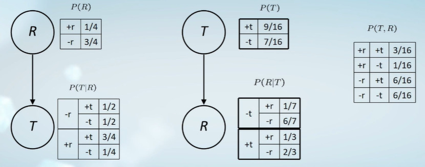
For example, the two diagrams on the left and right describe the same thing (R: Rain; T: Traffic jam), namely the probability table on the far right. This probability table is directly obtained from the dataset. From a god's-eye view, the left diagram describes the correct causal relationships. However, in practice, we can only derive the probability table from the dataset, which allows us to determine only that there is a correlation between rain and traffic congestion. How to derive causality will be discussed later; for now, let's clarify how to compute the probability table. Consider a Bayesian network consisting of \(n\) variables. To compute \(P(v_1,v_2,...v_n)\), we use the chain rule: \[ P(v_n)=\prod _{i=1}^{n}P(v_i|v_1,...v_{i-1}) \]
In the Bayesian network, if there is a relationship \(A\rightarrow B\rightarrow C\), we assume that \(A\) and \(C\) are conditionally independent given \(B\), i.e., we assume: \[ v_i\perp \{v_1,...v_{i-1} \} \cap {\neg parent(v_i)}|parent(v_i) \] then \[ P(v_i|v_1,...v_{i-1})=P(v_i|parent(v_{i}))\\\ P(v_n)=\prod _{i=1}^{n}P(v_i|parent(v_{i}))\tag{1} \] Generally, the number of parent nodes in a Bayesian network is much smaller than the total number of nodes, so calculating \(P(v_i|parent(v_{i}))\) is feasible. The conditional independence assumption is still a simplification but retains more information about feature relationships compared to naive Bayes.
Causal Model
In a Bayesian network, the assumption of conditional independence ignores some relationships between features. In the relationship \(A\rightarrow B\rightarrow C\), \(A\) and \(C\) may not be independent given \(B\). In the manual construction algorithms for Bayesian networks, if a newly added node is correlated with nodes already in the network, an edge is drawn, meaning \(A\) and \(C\) may be independent, but they are not necessarily conditionally independent given \(B\). This was discussed in the first section. However, if we can construct a Bayesian network that adheres to the assumption of conditional independence, this network can overcome the limitations of the assumptions. This can be achieved by constructing a Bayesian network based on causality. In a causal DAG, the values of cause nodes influence the values of effect nodes (though not necessarily due to the existence of hidden variables).
Exogenous Variables
Some variables impact the data but are not recorded as features; these are known as hidden variables. Due to the presence of hidden variables, we cannot ensure that the value of a cause in the DAG corresponds to a value of an effect. Instead, both the value of the cause and the value of the hidden variable jointly determine the value of the effect, assuming the hidden variable is independent of the observed variables.
Definition
Causal relationships can be viewed as functions where causes serve as independent variables and effects as dependent variables. Based on this definition, the relationships between nodes in a causal DAG have the following three basic types. (These relationships can also be applied in non-causal DAGs; in fact, they first appeared in non-causal DAGs, but in causal DAGs, the following can be strictly proven based on the definition, whereas in non-causal DAGs, they serve merely as simplifications without strict mathematical significance.)
- Chain: \(A\rightarrow B\rightarrow C\)
- Common cause: \(A\leftarrow B\rightarrow C\)
- Common effect: \(A\rightarrow B\leftarrow C\)
In a chain relationship, according to the definition of causality, let \(A=f(U_A),B=g(A,U_B),C=h(B,U_C)\), where \(U_A,U_B,U_C\) are sets of latent variables.
- If \(P(B=b | A=a)=0\), then \(A=a\) and \(B=b\) are not independent. Otherwise, we have
\[ \begin{aligned} P(B=b|A=a)&=P(g(A,U_B)=b|A=a)=\frac{P(g(A,U_B)=b,A=a)}{P(A=a)}\\ &=\frac{P(A=a,U_B=u_b)}{P(A=a)}=P(U_B=u_b) \end{aligned} \]
where \(g(a,u_b)=b\), and \(u_b\) is the set of all values of \(U_B\) that satisfy this relationship.
If \(P(B=b) = P(U_B=u_b)\), then $ A=a $ and $ B=b $ are independent, meaning that $ B=b $ holds only when $ U_B=u_b $. Otherwise, $ P(B=b|A=a) P(B=b) $. In summary, $ A $ and $ B $ are independent only when the value of $ B $ is completely determined by $ U_B $. Similarly, $ B $ and $ C $, as well as $ A $ and $ C $, may be dependent for some values and independent for others. However, $ A $ and $ C $ are conditionally independent given $ B $ because:
- If $ P(B=b|A=a)=0 $, then $ P(A=a,B=b)=0 $, which implies $ P(A=a|B=b)P(C=c|B=b)=P(A=a,C=c|B=b)=0 $, thus $ A C | B $. Similarly, if $ P(C=c|B=b)=0 $, then $ A C | B $. Otherwise, following a similar argument, we have \[ \begin{aligned} P(A=a,C=c|B=b)&=\frac{P(A=a,B=b,C=c)}{P(B=b)}\\ &=\frac{P(A=a,B=b,U_C=u_c)}{P(B=b)}=\frac{P(A=a,U_B=u_b,U_C=u_c)}{P(B=b)}\\ P(A=a|B=b)&=\frac{P(A=a,U_B=u_b)}{P(B=b)}\\ P(C=c|B=b)&=P(U_C=u_c) \end{aligned} \]
Thus we have \[ P(A=a,C=c|B=b)=P(A=a|B=b)P(C=c|B=b) \] In conclusion, $ A $ and $ C $ are conditionally independent given $ B $. Intuitively, when we know the value of $ B $, the value of $ C $ can be roughly determined, but we do not know which value of $ A $ led to that value of $ B $.
It can be proven that in a common cause relationship, $ A $ and $ B $, $ C $ and $ B $, $ A $ and $ C $ may not be independent, but $ A $ and $ C $ are conditionally independent given $ B $. This is also intuitive because once $ B $ is given, the values of $ A $ and $ C $ are determined solely by latent variables.
In a common effect relationship, $ A $ and $ B $, $ C $ and $ B $ may not be independent, but $ A $ and $ C $ are independent, and $ A $ and $ C $ are conditionally independent given $ B $ and its child nodes. Consider the following scenario:
Tossing two coins, if at least one shows heads, a bell rings. Let $ X $: the first coin toss, $ Y $: the second coin toss, $ Z $: the ringing of the bell, conforming to the common effect relationship $ X Z Y $. The probability distribution of $ X, Y, Z $ is as follows:
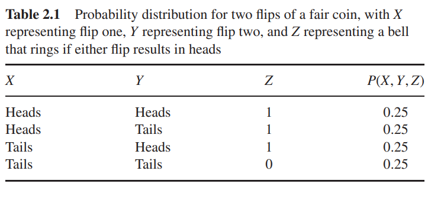
From this, we can derive $ P(X=Head|Z=1)= $ and $ P(X=Head|Y=Head,Z=1)= $. Knowing that $ Y $ is heads reduces the probability of $ X $ being heads. Now suppose there is an unreliable bell-ringer who informs us that the bell rang, reporting 100% when it rings and having a 50% chance of reporting when it does not ring. Let $ W $: the received report. The causal graph then becomes:
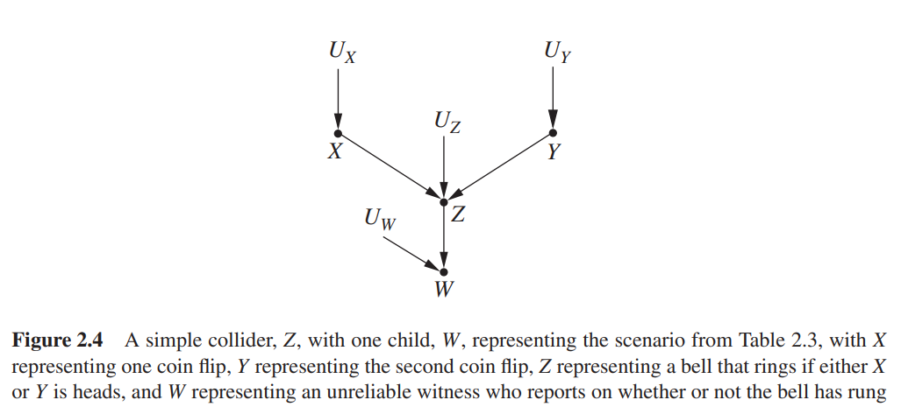
The probability distribution for $ X, Y, W $ is as follows:
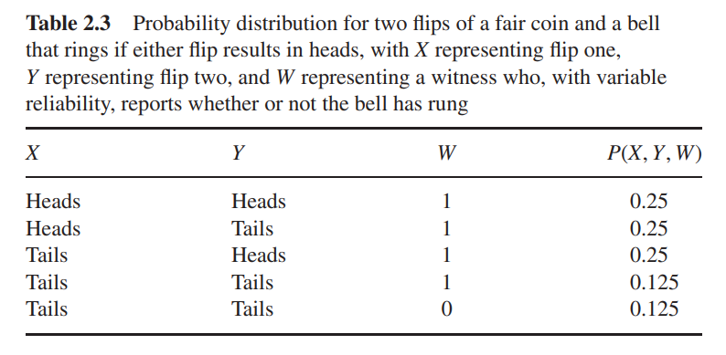
From this, we find $ P(X=Head|W=1)= $, and \(P(X=Head|Y=Head,W=1)=0.5\). So \(X\) and \(Y\) are not conditionally independent given \(W\).
Directed Separation
Directed separation is used to determine whether two variables are independent given other variables. It summarizes the three types of node relationships mentioned above.
- If two variables $ X $ and $ Y $ are blocked by a set of variables $
Z $, then $ X Y | Z $. The blocking includes the following two cases:
- A path $ p $ from $ X $ to $ Y $ contains a chain relationship $ A B C $ or a common cause relationship $ A B C $, and $ B $ is in $ Z $;
- A path $ p $ from $ X $ to $ Y $ contains a common effect relationship $ A B C $, and $ B $ and its child nodes are in $ Z $.
Intervening
“The difference between intervening on a variable and conditioning on that variable should, hopefully, be obvious. When we intervene on a variable in a model, we fix its value. We change the system, and the values of other variables often change as a result. When we condition on a variable, we change nothing; we merely narrow our focus to the subset of cases in which the variable takes the value we are interested in. What changes, then, is our perception about the world, not the world itself.” ---Chapter 3.1 of Casual Inference in Statistics
In the example of smoking and lung cancer, we cannot determine the causality between smoking and lung cancer solely based on correlation. To assess causality, we can consider the following scenario: take a group of individuals who do not smoke and force them to smoke, then observe the probability of developing lung cancer. Next, take a group of individuals without lung cancer and induce lung cancer in them, then observe the probability of smoking. Let $ X $: smoking, $ Y $: lung cancer. In the first case, the probability of lung cancer is higher than the baseline probability in the population, that is, $ P(Y=1|do(X=1)) P(Y=1) $. In the second case, the probability of smoking remains equal to the population's smoking probability, $ P(X=1|do(Y=1))=P(X=1) $. These results indicate that smoking is a cause of lung cancer, whereas lung cancer is not a cause of smoking. It is important to note that the do operator implies we are controlling the value of variable $ X $ without altering the values of any latent variables. Otherwise, in a causal DAG, any latent variables that change must be represented as variable nodes. (The original statement: "It is worth noting here that we are making a tacit assumption that the intervention has no 'side effects,' that is, that assigning the value $ x $ for the variable $ X $ for an individual does not alter subsequent variables in a direct way." Here, "direct way" is somewhat vague.) We should note that $ P(Y|do(X=1)) P(Y|X=1) $. When we enforce $ X=1 $, the parent nodes of $ X $ no longer affect it; thus, all incoming edges of $ X $ disappear in the causal DAG. Conversely, when $ X $ is not forcibly altered, its parent nodes can influence both $ X $ and $ Y $. For example, let $ X $: increased sales at an ice cream shop, $ Y $: increased crime rate, $ Z $: hotter weather. Here, there is a causal relationship $ X Z Y $, represented in the following causal DAG:
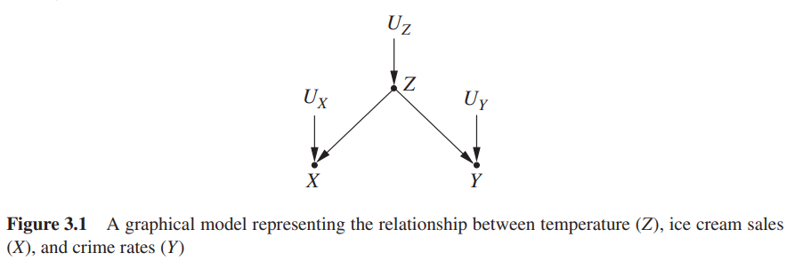
If we take measures to set $ X=0 $, such as closing all ice cream shops, then $ Z $ can no longer influence $ X $, and the causal DAG changes to:
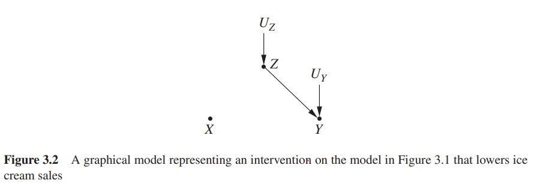
In summary, intervening on a variable is equivalent to removing all incoming edges from it in the causal DAG, making it no longer a cause. Therefore, only when $ X $ is an orphan node can we have $ P(Y|do(X=1)) = P(Y|X=1) $.
Intervention and Observation
As long as we can obtain $ P(Y=y|do(X=x)) $, we can construct a perfect causal DAG. The example above provides a method for determining causality, but it is worth noting that in reality, we may not be able to conduct such experiments. To differentiate, we refer to this direct control of variables as intervention. Interventions allow us to directly obtain $ P(Y=y|do(X=x)) $. As a secondary option, can we attempt to infer causal relationships from correlational data? As mentioned earlier, for stable data, correlation can reflect causality. If we have stable data, we can use observation to assess the strength of causal relationships and approximate $ P(Y=y|do(X=x)) $.
Causal Calculation
Average casual effect
It is also worth noting that due to the presence of latent variables, we cannot derive definitive causal relationships from observational data; instead, we can only calculate the strength of causality between variables. One straightforward idea is to control the values of $ X $ and observe the differences in $ Y $ across different values of $ X $, as shown in the example below
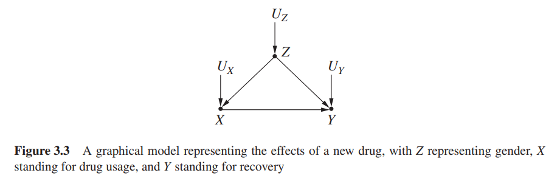
To measure the strength of causality from $ X $ to $ Y $, consider calculating the difference in the probability of cure when using a drug versus not using it: \[ ACE=P(Y=1|do(X=1))-P(Y=1|do(X=0)) \] Next, we will attempt to calculate $ P(Y=y|do(X=x)) $.
Adjustment Formula
In the example of using drug, the causal DAG transfers to following figure when \(X\) is fixed.
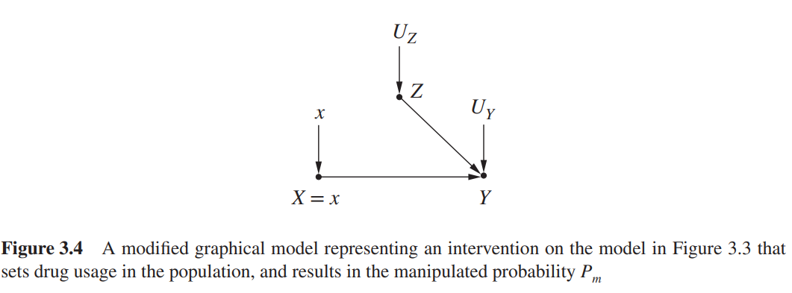
This is called manipulated model. The probabilities appearing in the manipulated model are denoted as \(P_m(*)\) (while the probabilities in the original causal DAG are denoted as $ P(*) $). Now, let's consider a more general case of how to calculate $ P(Y=y|do(X=x)) $. Since $ X $ becomes an orphan node after control, we have $ P(Y=y|do(X=x)) = P_m(Y=y|X=x) $. Because $ X $ and $ Z $ are independent in the manipulated model, we can express: \[ \begin{aligned} P_m(Y=y|X=x)&=\frac{P_m(Y=y,X=x)}{P_m(X=x)}=\sum_{z}\frac{P_m(Y=y,X=x,Z=z)}{P_m(X=x)}\\ &=\sum_{z}\frac{P_m(Y=y,X=x,Z=z)P_m(X=x,Z=z)}{P_m(X=x)P_m(X=x,Z=z)}\\ &=\sum_{z}P_m(Y=y|X=x,Z=z)P_m(Z=z|X=x)\\ &=\sum_{z}P_m(Y=y|X=x,Z=z)P_m(Z=z) \end{aligned} \] At this point, the \(do\) operator has been eliminated, and the mission of the manipulated model is complete. In both the original causal DAG and the manipulated model, the causal relationships involving $ Y $ and the variables $ X $ and $ Z $ remain the same, i.e., $ Y = f(X,Z,U_Y) $. Thus, we have $ P_m(Y=y|X=x,Z=z) = P(Y=y|X=x,Z=z) $ and $ Z $ is a cause in both diagrams, with $ Z = g(U_Z) $, therefore $ P_m(Z=z) = P(Z=z) $. In the manipulated model, only the functional relationship of $ X $ is altered; in the original causal DAG, $ X = h(Z,U_X) $, while in the manipulated model, $ X = h_m(U_X) $. Thus, we have: \[ P(Y=y|do(X=x))=\sum_{z}P(Y=y|X=x,Z=z)P(Z=z) \] The above equation is the correction formula for \(Z\) when \(X\) is controlled.
Now, consider the Simpson's paradox. Let \(X\): drug use, \(Y\): cure, and \(Z\): gender. The causal DAG is as shown in the section on average causal effects. \[ \begin{aligned} P(Y=1|do(X=1))&=P(Y=1|X=1,Z=men)P(Z=men)+P(Y=1|X=1,Z=women)P(Z=women)\\ &=0.93\times \frac{87+270}{700}+0.73\times \frac{263+80}{700}=0.832\\ P(Y=1|do(X=0))&=P(Y=1|X=0,Z=men)P(Z=men)+P(Y=1|X=0,Z=women)P(Z=women)\\ &=0.87\times \frac{87+270}{700}+0.69\times \frac{263+80}{700}=0.7818 \end{aligned} \] Thus, the average causal effect of \(X\) on \(Y=1\) is given by \[ ACE=P(Y=1|do(X=1))-P(Y=0|do(X=1))=0.0502 \]
Causal Effect Rule
The adjustment formula provides a method for eliminating the do operator under a specific scenario. For a more general case, we can also leverage the manipulated model. In the manipulated model, two types of nodes are independent of $ X $: one type is originally independent of $ X $, and the other is the parent nodes $ PA(X) $ of $ X $.
For the first case, if $ Z $ is independent of $ X $, meaning the causal relationship is $ X Y Z $, then the original DAG and the manipulated model are the same. We have: \[ P(Y|do(X=x)) = P_m(Y|X=x) = P(Y|X=x) = \sum_{z} P(Y|X=x,Z=z) P(Z=z). \]
This illustrates why the derivation below does not require the inclusion of all variables independent of $ X $ in the manipulated model. When only the parent nodes of $ X $ are introduced, it remains consistent with the calculations in a Bayesian network. \[ \begin{aligned} P(Y=y|do(X=x))&=\frac{P_m(Y=y,X=x)}{P_m(X=x)}\\ &=\sum_{z}\frac{P_m(Y=y,X=x,PA(X)=z)}{P_m(X=x)}\\ &=\sum_{z}\frac{P_m(Y=y,X=x,PA(X)=z)P_m(X=x,PA(X)=z)}{P_m(X=x)P_m(X=x,PA(X)=z)}\\ &=\sum_{z}P_m(Y=y|X=x,PA(X)=z)P_m(PA(X)=z|X=x)\\ &=\sum_z P(Y=y|X=x,PA(X)=z)P(PA(X)=z)\\ &=\sum_z \frac{P(X=x,Y=y,PA(X)=z)}{P(X=x|PA(X)=z)} \end{aligned}\tag{2} \]
Backdoor Criterion
Observing the derivation process of the above formula, the key point is that $ P_m(Y=y|X=x,PA(X)=z) = P(Y=y|X=x,PA(X)=z) $ and $ P_m(PA(X)=z|X=x) = P_m(PA(X)=z) = P(PA(X)=z) $.
The first equality holds under the condition that fixing $ X $ and $ PA(X) $ yields the same probability distribution for $ Y $ in both the original DAG and the manipulated model. Since the manipulated model only eliminates the incoming edges of $ X $, the value of any confounding node that exists between $ X $ and $ Y $ will be fixed, meaning that the value of $ Y $ will only be influenced by $ X $ and nodes independent of $ X $.
For instance, consider the following causal relationship:
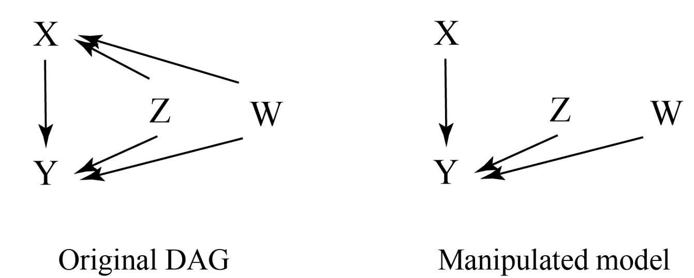
We have: \[ \begin{aligned} P(Y=y|X=x,Z=z)&=\frac{P(Y=y,X=x,Z=z)}{P(X=x,Z=z)}\\ &=\frac{P(f(X,Z,W,U_Y)=y,X=x,Z=z)}{P(X=x,Z=z)}\\ &=\frac{P(W=u_w,U_Y=u_y,X=x,Z=z)}{P(X=x,Z=z)} \end{aligned}\tag{3} \] Here, $ u_w, u_y $ are all values satisfying $ f(x,z,W,U_Y)=y $. Since $ W $ is not independent of $ X $, we cannot obtain $ P(W=u_w,U_Y=u_y,X=x,Z=z) = P(W=u_w)P(U_Y=u_y)P(X=x,Z=z) $. However,
\[ \begin{aligned} P_m(Y=y|X=x,Z=z)&=\frac{P_m(X=x,Z=z,W=u_w,U_Y=u_y)}{P_m(X=x,Z=z)}\\ &=\frac{P_m(X=x)P_m(Z=z)P_m(W=u_w)P_m(U_Y=u_y)}{P_m(X=x)P_m(Z=z)}\\ &=P_m(W=u_w)P_m(U_Y=u_y)\end{aligned}\tag{4} \] By observing the differences between equations (3) and (4), we see that to eliminate the denominator in (3), both $ W $, $ X $, and $ Z $ must be eliminated simultaneously, leading to: \[ \begin{aligned} P(Y=y|X=x,Z=z,W=w)&=\frac{P(W=w,U_Y=u_y,X=x,Z=z)}{P(X=x,Z=z,W=w)}\\ &=P(U_Y=u_y) \end{aligned} \] On the other hand \[ \begin{aligned} P_m(Y=y|X=x,Z=z,W=w)&=\frac{P_m(X=x,Z=z,W=w,U_Y=u_y)}{P_m(X=x,Z=z,W=w)}\\ &=P_m(U_Y=u_y)\\ &=P(Y=y|X=x,Z=z,W=w) \end{aligned} \] Therefore, only by fixing the values of all confounding nodes can we obtain $ P_m(Y=y|X=x,Z=z,W=w) = P(Y=y|X=x,Z=z,W=w) $.
The condition for the second equality to hold is that $ PA(X) $ and $ X $ are independent in the manipulated model. Thus, any set of nodes that is independent of $ X $ in the manipulated model can replace $ PA(X) $ in the derivation above. Therefore, when the parent nodes of $ X $ are difficult to identify, we can use these two conditions to find alternative nodes to compute with, yielding the same results. This is referred to as the backdoor criterion, as expressed in equation (5):
\[ P(Y=y|do(X=x))=\sum_zP(Y=y|X=x,W=w)P(W=w)\tag{5} \] The set of nodes $ W $ must satisfy the following two conditions:
- $ W $ does not include any descendant nodes of $ X $;
- $ W $ blocks all paths pointing from $ X $ to $ Y $.
These two conditions are equivalent to the conclusions derived above:
- $ W $ includes all confounding nodes;
- In the manipulated model, $ X $ is independent of the nodes in $ W $.